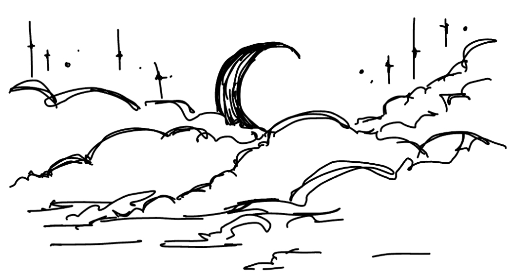

home
How I came to Spaceland, and what I saw there: An unspeakable horror seized me. There was a darkness; then a dizzy, sickening sensation of sight that was not like seeing; I saw a Line that was no Line; Space that was not Space: I was myself, and not myself. When I could find voice, I shrieked aloud in agony, "Either this is madness or it is Hell." "It is neither," calmly replied the voice of the Sphere, "it is Knowledge; it is Three Dimensions; open your eye once again and try to look steadily." --Edwin A. Abbott, Flatland
welcome to my new and improved website!!!
I wanted to switch things up, so here's my new website! I have
tons of doodles in the margins of my notes from class, so I
decided to scatter them around my website. I was inspired by
neocities and the
geocities archive. This site is still under construction, but I hope you enjoy
:^).
